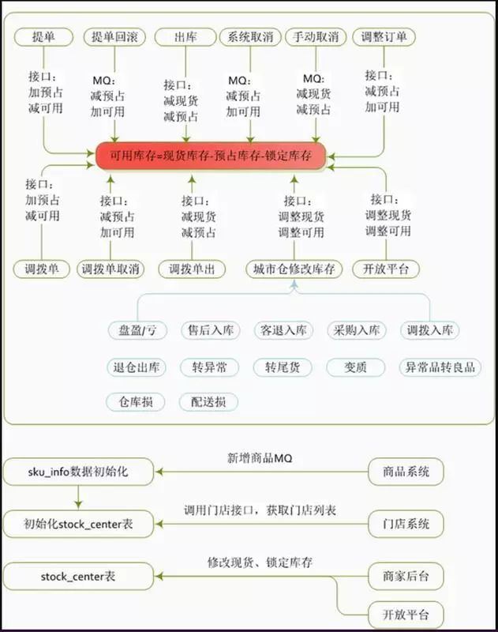
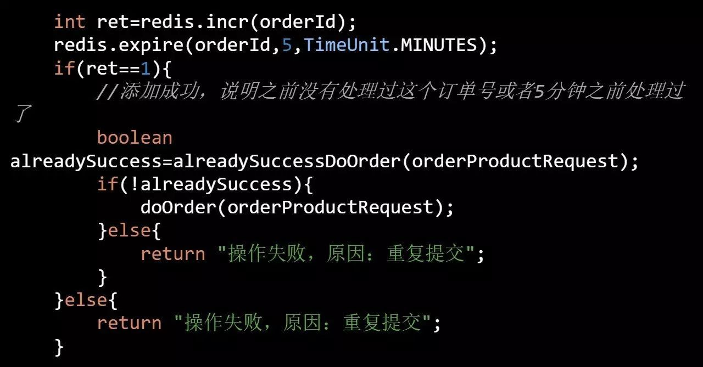
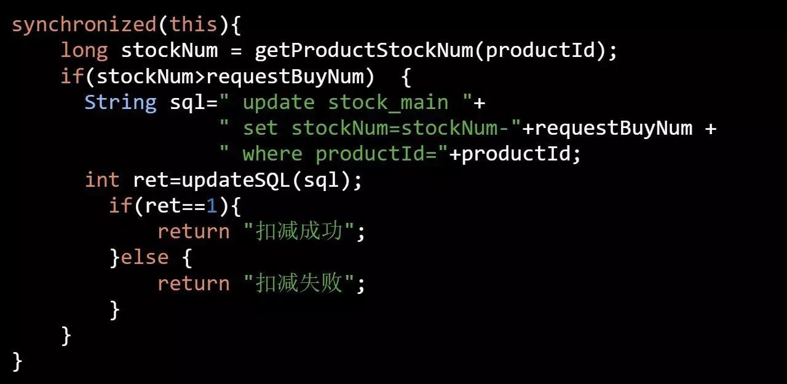
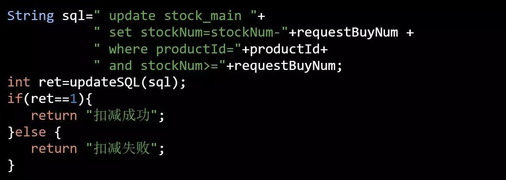
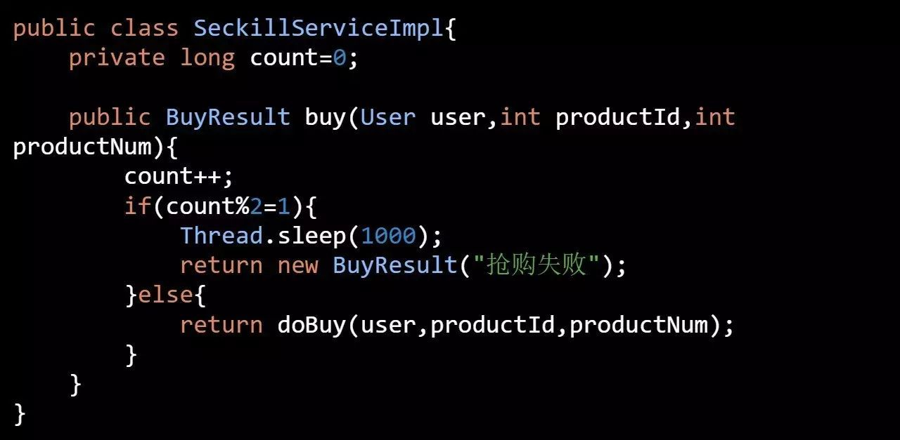
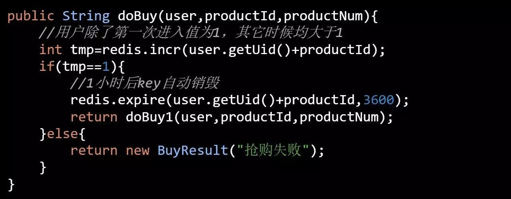
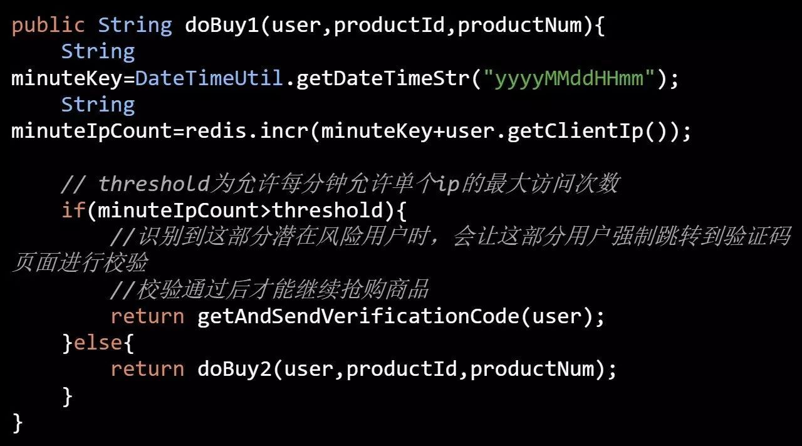
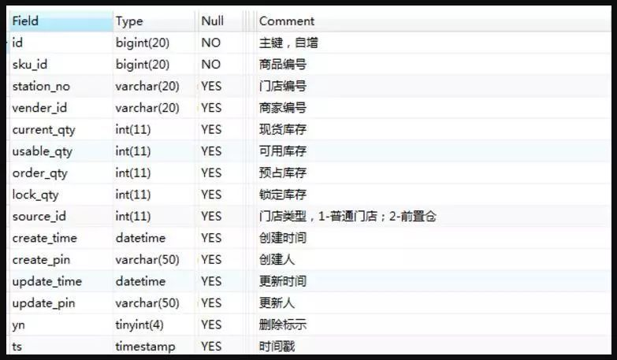
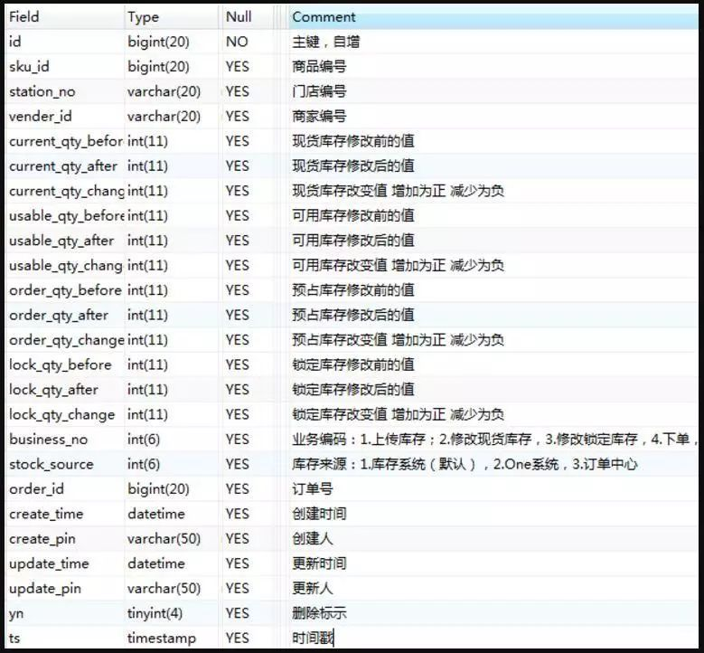
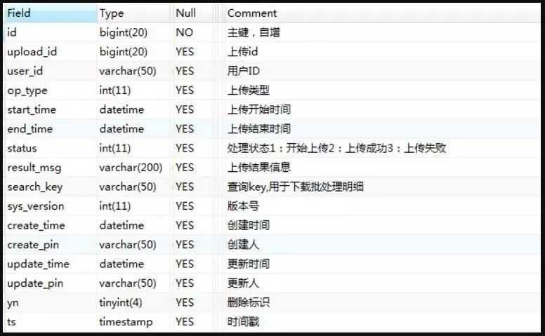

库存系统难破题？京东到家来分享
库存系统数据流转

库存系统数据流转图解释说明：
库存系统的数据流转，指的都是销售库存的数据流转，在京东到家还有自营类业务板块，即上图中提到的城市仓，由于它涉及到采购入库及盘盈盘亏等问题, 所以会由一套 WMS 系统来支撑。
京东到家设计初衷就是希望商家下的商品各门店共享，带来的问题就是商家新建一个商品时，需要推送到商家下所有的门店中，即所有的门店均可以看到这个商品。或者商家新建一个门店时，需要将商家下所有的商品均推送到这个新建的门店中，所以这采用了 MQ 技术进行异步化批量处理。
写到这里，相信对大家对库存系统有了初步的了解，从上图来看功能上其实并不复杂，但是他面临的技术复杂度却是相当高的，比如秒杀品在高并发的情况下如何防止超卖。
另外库存系统还不是一个纯技术的系统，需要结合用户的行为特点来考虑，比如下文中提到什么时间进行库存的扣减最合适，我们先抛出几个问题和大家一起探讨下，如有不妥之处，欢迎大家拍砖。
方案
库存什么时候进行预占 (或者扣减) 呢
商家销售的商品数量是有限的，用户下单后商品会被扣减，我们可以怎么实现呢？
举个例子： 一件商品有 1000 个库存，现在有 1000 个用户，每个用户计划同时购买 1000 个。
- 实现方案 1：如果用户加入购物车时进行库存预占，那么将只能有 1 个用户将 1000 个商品加入购物车。
- 实现方案 2：如果用户提交订单时进行库存预占，那么将也只能有 1 个用户将 1000 个商品提单成功，其它的人均提示“库存不足，提单失败”。
- 实现方案 3：如果用户提交订单 & 支付成功时进行库存预占，那么这 1000 个人都能生成订单，但是只有 1 个人可以支付成功，其它的订单均会被自动取消。
京东到家目前采用的是 方案 2，理由如下：
用户可能只是暂时加入购物车，并不表示用户最终会提单并支付。
所以在购物车进行库存校验并预占，会造成其它真正想买的用户不能加入购物车的情况，但是之前加车的用户一直不付款，最终损失的是公司。
方案 3 会造成生成 1000 个订单，无论是在支付前校验库存还是在支付成功后再检验库存，都会造成用户准备好支付条件后却会出现 99.9% 的系统取消订单的概率，也就是说会给 99.9% 的用户体验到不爽的感觉。
数据表明用户提交订单不支付的占比是非常小的（相对于加入购物车不购买的行为），目前京东到家给用户预留的最长支付时间是 30 分钟，超过 30 分钟订单自动取消，预占的库存自动释放。
综上所述，方案 2 也可能由于用户下单预占库存但最终未支付，造成库存 30 分钟后才能被其它用户使用的情况，但是相较于方案 1，方案 3 无疑是折中的最好方案。
重复提交订单的问题
重复提交订单造成的库存重复扣减的后果是比较严重的。比如商家设置有 1000 件商品，而实际情况可能卖了 900 件就提示用户无货了，给商家造成无形的损失
可能出现重复提交订单的情况：
- 用户善意行为：app 上用户单击“提交订单”按钮后由于后端接口没有返回，用户以为没有操作成功会再次单击“提交订单”按钮
- 用户恶意行为：黑客直接刷提单接口，绕过 App 端防重提交功能
- 提单系统重试：比如提单系统为了提高系统的可用性，在第一次调用库存系统扣减接口超时后会重试再次提交扣减请求
好了，既然问题根源缕清楚了，我们一一对症下药
- 用户善意行为：App 侧在用户第一次单击“提交订单”按钮后对按钮进行置灰，禁止再次提交订单
- 用户恶意行为：采用令牌机制，用户每次进入结算页，提单系统会颁发一个令牌 ID（全局唯一），当用户点击“提交订单”按钮时发起的网络请求中会带上这个令牌 ID, 这个时候提单系统会优先进行令牌 ID 验证，令牌 ID 存在 & 令牌 ID 访问次数 =1 的话才会放行处理后续逻辑，否则直接返回
- 提单系统重试：这种情况则需要后端系统（比如库存系统）来保证接口的幂等性，每次调用库存系统时均带上订单号，库存系统会基于订单号增加一个分布式事务锁。
伪代码如下：

库存数据的回滚机制如何做
需要库存回滚的场景也是比较多的，比如：
- 用户未支付：用户下单后后悔了
- 用户支付后取消：用户下单 & 支付后后悔了
- 风控取消：风控识别到异常行为，强制取消订单
- 耦合系统故障：比如提交订单时提单系统 T1 同时会调用积分扣减系统 X1、库存扣减系统 X2、优惠券系统 X3，假如 X1、X2 成功后，调用 X3 失败，需要回滚用户积分与商家库存。
其中场景 1、2、3 比较类似，都会造成订单取消，订单中心取消后会发送 MQ 出来，各个系统保证自己能够正确消费订单取消 MQ 即可。
而场景 4 订单其实尚未生成，相对来说要复杂些，如上面提到的，提单系统 T1 需要主动发起库存系统 X2、优惠券系统 X3 的回滚请求（入参必须带上订单号），X2、X3 回滚接口需要支持幂等性。
其实针对场景 4，还存在一种极端情况，如果提单系统 T1 准备回滚时自身也宕机了，那么库存系统 X2、优惠券系统 X3 就必须依靠自己来完成回滚操作了，也就是说具备自我数据健康检查的能力，具体来说怎么实现呢？
可以利用当前订单号所属的订单尚未生成的特点，可以通过 worker 机制，每次捞取 40 分钟（这里的 40 一定要大于容忍用户的支付时间）前的订单，调用订单中心查询订单的状态，确保不是已取消的，否则进行自我数据的回滚。
多人同时购买 1 件商品，如何安全地库存扣减？
现实中同一件商品可能会出现多人同时购买的情况，我们可以如何做到并发安全呢？
伪代码片段 1：

伪代码片段 1 的设计思想是所有的请求过来之后首先加锁，强制其串行化处理，可见其效率一定不高。
伪代码片段 2：

这段代码只是在 where 条件里增加了and stockNum>=”+requestBuyNum即可防止超卖的行为，达到了与上述伪代码 1 的功能。
如果商品是促销品（比如参与了秒杀的商品）并发扣减的机率会更高，那么数据库的压力会更高，这个时候还可以怎么做呢?
海量的用户秒杀请求，本质上是一个排序，先到先得。但是如此之多的请求，注定了有些人是抢不到的，可以在进入上述伪代码 Dao 层之前增加一个计数器进行控制，比如有 50% 的流量将直接告诉其抢购失败，伪代码如下：

另外同一个用户，不允许多次抢购同一件商品，我们又该如何做呢?

如果同一个用户拥有不同的帐号，来抢购同一件商品，上面的策略就失效了。一些公司在发展早期几乎是没有限制的，很容易就可以注册很多个账号。也即是网络所谓的“僵尸账号”，数量庞大，如果我们使用几万个“僵尸号”混进去抢购，这样就可以大大提升我们中奖的概率，那我们如何应对呢？

库存系统的核心表结构设计
下面列出了库存系统的核心表结构，提供出来供大家在工作中能够有所参考。

库存主表，命名规则：stock_center_00~99 库存主表

库存流水表，命名规则：stock_center_flow_00~99 库存流水表

库存批量操作日志表，命名规则：batch_upload_log 库存批量操作日志表
ref:
库存系统难破题？京东到家来分享
ref:
https://www.cnblogs.com/davidwang456/articles/10251560.html